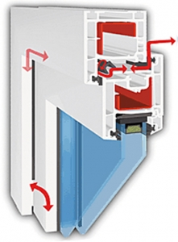
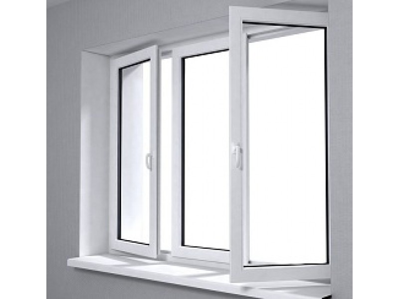

Plastikinių langų kainos | MANO NAMUKAS
 LT RU EN LV Meniu Prekės IŠPARDAVIMAS PLASTIKINIAI LANGAI Plastikiniai langai SKUBIAI Langų montavimas A+ klasė Plastikinių langų KAINOS Laiptinių langai daugiabučiams Plastikiniai langai visoje LIETUVOJE Ekonominė serija Praktinė serija Patrauklumo serija Išskirtinumo serija (A+) Pasyvus langas (A+) Savaime nusivalantis stiklas Plastikinių langų garantija ALIUMINIO KONSTRUKCIJOS STOGO LANGAI NAMO DURYS STOGELIAI GARAŽO VARTAI TINKLELIAI Įmonė Partneriai Patarimai Konsultacija Servisas Kontaktai Galerija IŠPARDAVIMAS PLASTIKINIAI LANGAI Plastikiniai langai SKUBIAI Langų montavimas A+ klasė Plastikinių langų KAINOS Laiptinių langai daugiabučiams Plastikiniai langai visoje LIETUVOJE Ekonominė serija Praktinė serija Patrauklumo serija Išskirtinumo serija (A+) Pasyvus langas (A+) Savaime nusivalantis stiklas Plastikinių langų garantija ALIUMINIO KONSTRUKCIJOS STOGO LANGAI NAMO DURYS STOGELIAI GARAŽO VARTAI TINKLELIAI
PLASTIKINIŲ LANGŲ KAINOS
Negaiškite laiko ir užsisakytkite plastikinius langus jau dabar . Mes pasirūpinsime, kad gautumėte geriausią pasiūlymą rinkoje!
Pateikiame tipinių plastikinių langų kainas
EKONOMINĖ SERIJA – AVANTGARDE 7000 PROFILIS
111 €
145 €
192 €
Ekonominės serijos ir serijoje naudojamų profilių aprašymas .
PRAKTINĖ SERIJA – OVLO PROFILIS
115 €
152 €
200 €
Praktinės serijos ir serijoje naudojamų profilių aprašymas .
PATRAUKLUMO SERIJA – ENCORE PROFILIS
122 €
161 €
211 €
Patrauklumo serijos ir serijoje naudojamų profilių aprašymas .
IŠSKIRTINUMO SERIJA (A+ klasė) – REHAU PROFILIS
183 €
251 €
300 €
Išskirtinumo serijos ir serijoje naudojamų profilių aprašymas .
PASYVIŲ LANGŲ SERIJA (A+ klasė) – KOMERLING 88+ PROFILIS
230 €*
292 €*
345 €*
*Kainos pateiktos su dvikameriniu stiklo paketu.
Pasyvių langų serijos ir serijoje naudojamų profilių aprašymas .
MANO NAMUKAS - visada šalia Jūsų!
Privatumo politika | Visos teisės saugomos | © www.manonamukas.lt | 2009 - 2019 | Moon TVS
